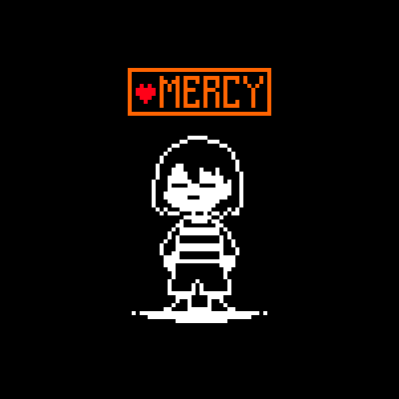

UNDERTALE
APRENDA MAIS SOBRE O JOGO EM RPG
PORQUE JOGAR?
1. As batalhas seguem o estilo clássico de bullet hell, com padrões que variam conforme os inimigos
2. Undertale tem uma das histórias mais cativantes de todos os tempos… e, ao mesmo tempo, uma das mais macabras também
3. A vida não tem botão de reset! Até o final do game, nós achamos que Undertale é totalmente despretensioso.Então eu lhes digo que não
